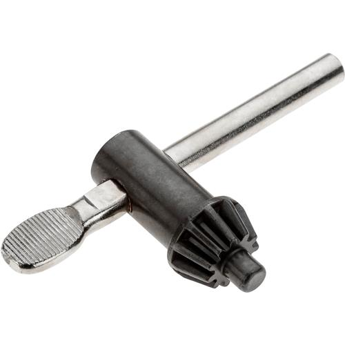

Intro to Power Tools¶
In the next section of the Tools document, we will be covering the different types of power tools we use as well as how to handle them safely. Power tools are a very important part of robotics, but they are also very dangerous. Make sure to read through this section thoroughly and don't be afraid to ask for help if you don't understand or are unsure of anything. Safety is our number one concern!
Must-Read for ALL Power Tools: Always unplug after use, and only plug it in once you're ready to use
Drivers and Drills¶
Drivers are great for quickly and conveniently securing fasteners such as screws while drills are used for making holes. When putting on the bits on the driver/drill, remember the phrase "righty-tighty, lefty, loosey". It's important that you take the proper bit for the job as well (if it’s a driver, match it up to the fastener head, if its a drill choose the right bit for the hole). For some, turn the chuck towards the left, so it’s loose enough to fit the bit in. Once it’s in place, secure the bit by tightening the chuck, usually twisting it right. Some drivers and drills allow you to push the chuck up, slide the bit in/out, and release, to secure it on.
When finished using drills/drivers, always put the bits back before leaving the Maker Space. Return the bits to the box in their respective sections. The bit boxes stay near the drivers and drills storage area. Don't forget to return the drivers and drills back to the shelf as well. They should be connected to a battery, so that they can charge. Usually, you slide the battery on/off the drivers and drills. Drivers and drills are stored near the second door to the Maker Space on the shelves.
Jigsaws¶
Jigsaws are hand held power tools, so they're good for cutting irregular curves on big sheets/pieces that are hard to move. When switching out blades, choose which type of blade you need for the job before plugging the tool in. Blue blades are used for cutting metal while red/black blades are used for cutting wood. Another way to distinguish blades is to look at the teeth: smaller teeth (more TPI, or teeth per inch) is used for cutting metal while bigger teeth (less TPI) is used for cutting wood. Also note that the blade must be facing outwards when you are securing it in.
Here are some tips for using jigsaws:
- Clamp down the piece being cut
- Start the blade before making contact with the part being cut
- Keep two hands on the jigsaw, one pressing the trigger and the other on the front of the saw (for stability)
- Stop cutting every once in a while to prevent the blade from heating up too much
- When done cutting, let the saw slow to a stop before removing it from the cut piece
Circular Saws¶
Circular saws are handheld tools used for cutting metal or wood stock precisely and/or in straight lines (ex. Dowel rods, 2x2's, 2x4's, etc.), or cutting into a part at an angle (used when constructing field elements).
Here are some tips for using circular saws:
- Securely clamp down the part being cut
- Start the blade before making contact with the part being cut
- Firmly move the saw through the piece, making sure that the blade is lined up with the cut line
Miter Saws¶
Miter saws have a blade mounted on a swing arm that pivots left or right to produce angled cuts. In other words, they're not restircted by angles! They are used when cutting wood and plastic, and can achieve quick and straight or angular cuts.
Here are some tips as well as a link on how to use miter saws:
- How to Use a Miter Saw
- Secure it to table
- Unplug from power saw, and install appropriate blade for what you’re cutting
- Always use sharp blades to avoid kickback
- Tighten the blade securely into place
- Lower and secure the bladeguard after securing blade, with screwdriver
- Raise saw over piece and allow it to reach full speed
- To make a miter cut: pivot the blade and secure it down again
Bandsaws¶
Bandsaws are used for cutting smaller pieces that can fit on the stand or for cutting out smaller measurements. When using a bandsaw, make sure there is a blade in piece and that it's secured. Also make sure that the bandsaw cover is closed and secured. A key is needed to use the bandsaw, so DON'T LOSE IT! When using the bandsaw, whichever direction the blade is circling towards is the side you’ll push the small wood or metal piece in slowly. Too fast, and the blade will get stuck in the wood piece/melt the metal piece. Too slow, and the blade could burn the piece (especially if it's wood).
While using the bandsaw, wear gloves because the piece can get hot. Also use the excess pieces to push the piece you’re cutting through the saw (so your fingers aren’t close to the blade). If it gets stcuk on the piece, push it back a little (towards you) and then keep going (if this happens, it usually means you were going too fast). After you're done, always unplug the bandsaw.
Here are some tips for switching out the blades (do this if you want to switch from metal to wood blades or vice versa)
- Make sure the bandsaw is unplugged
- Open the bandsaw cover by loosening the knob on the side
- To loosen the blades, turn the knob at the top. Wear fabric gloves to carefully hold the blade when removing it (there should be one, stretched across two wheels)
- Making sure they’re in the right direction (the blades turn clockwise) when you ‘stretch’ the new blade across the two wheels
- It has to be centered on the wheel and a tight fit, so you must be precise and careful
- Return the removed blades to the bandsaw blade storage area
- Make sure to close the cover and re-tighten the knobs on the cover
Portable Bandsaw¶
Portable bandsaws are used for cutting stock, similar to a bandsaw, but when you don't have a regular bandsaw available.
While using, keep one hand on the handle and the other hand on the switch. Hold the bandsaw firmly when cutting since the blade can catch the piece being cut. Don't cut "flexible" parts like sheet, aluminium, and L-brackets. Only cut "rigid" parts such as sheet steel, aluminum 2x4's, 2x2's, shafts, etc.)
Drill Press¶
Drill presses are used for precisely drilling holes into wood or metal. We often use them for drilling bearing holes into parts for the robot.
Here are some tips on how to use drill presses:
- Do NOT wear gloves when using the drill press (gloves can get caught in the bit and pull hand in)
- Clamp everything securely to the stand
- Lift up from piece you’re drilling every so often, and drill slowly
- Have a supervisor for beginners: especially for long pieces, so they can hold the other end; or when there is a shortage on clamps (they can help hold it in place)
- Always have one hand on the switch, one on the handle
- This means that your alignment has to be precise, so accurately mark it beforehand
- You can turn the handle to bring the drill down onto the piece (without turning the drill press on), to get a precise alignment for the hole you want to drill out
- To remove the bit, use the key to loosen the chunk, allowing for removal of the drill bit.

Combination Square¶
Combination squares are used for drawing accurate 90 or 45-degree angles for cutting. To use a combination square, line it up on the edge of the square, one for 90 degrees, one for 45 degrees. You can adjust the ruler by loosening the screw that connects it. Always keep the metal ruler with the combination square.
Dremel¶
Dremels are used for removing edges from metal pieces. While using the dremel, make sure not to touch the bit while it's moving. Remove a little bit of material at a time, lifting the bit away from the piece from time to time.
Belt Sander¶
Belt sanders are used for sanding down, cutting, or measurement errors on WOOD pieces to make them smoother or fit better on the robot. While using a belt sander, hold it with two hands: one on the handle and the other on the switch. Turn on the sander before making contact with the piece you are sanding. Always clamp down on the object you are sanding.
Arbor Press¶
Arbor presses are used for pressing or removing a bearing from a bearing hole. When using an arbor press, have one hand on the part you are pressing and the other hand on the lever. Never place your hand underneath the press head.